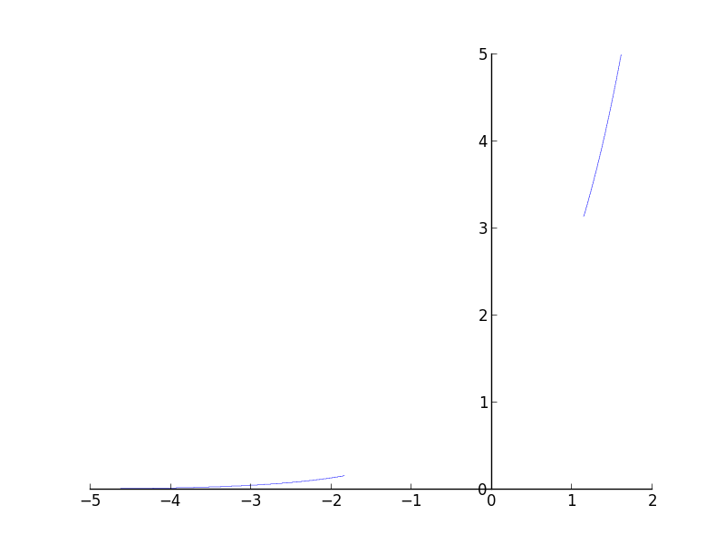
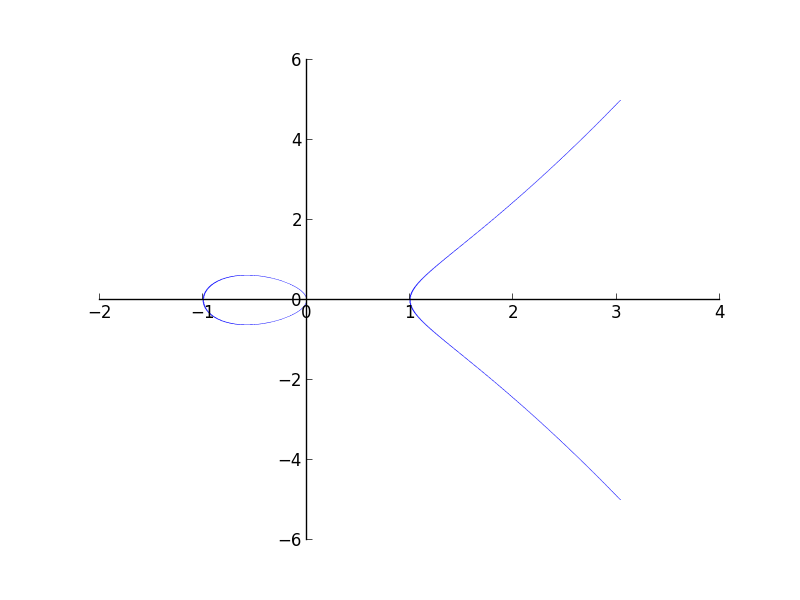

This week has been quite eventful. The implicit plotting module is almost done. I added the functionality of combining expressions using the And and Or statements. Now you can do
plot_implicit(And(Eq(y, exp(x)), y - x > 2)
and get a plot as below. So now you can combine any number of equations / inequalities and plot it. I think its possible to do a lot of cool stuff combining equations / inequalities.

Plotting through interval math is awesome but is also very limited. You cannot add support to re(), to functions that you cannot characterize as monotonic in certain regions. But we always encounter such functions. So there should be some fall back algorithm to plot such plots. I implemented the fall back algorithm last week. The idea is borrowed from sage implicit plots. We convert an equation / inequality into a function which returns 1 if it satisfies and -1 if it doesn't satisfy. So if you are plotting an equality then you plot using the contour command of matplotlib, and instruct it to plot only the zero contour. If its an inequality then plotting the region with two colors gives the plot required.
These are examples from the fallback algorithm.
Plot of
The plot with interval arithmetic is more precise. 
I haven't finished with the tests. Once I finish the tests I can send a pull request. The pull request will be pretty big, but most of the things have been reviewed in my previous pull request. This is just an extension of the previous pull request.
There are certain problems with the module though. The line width problem which I mentioned in my previous blog post, cannot be fixed. So you will have to change to the fall back method if the line width becomes large. Also the fall back algorithm cannot plot boolean combinations of equations / inequalities. So the two methods complement each other largely. So the next question would be whether we can choose one of the two intelligently. I guess the answer is No. That decision must be taken by the user. But most of the times the interval math approach works very nicely.
Comments !